土壤力學（SM）・命題大綱 SM-U1-5-2-1・影片講義
Skempton 孔壓參數 A、B
影片 7:14・9 章・20 段・觀念影片（含 SM-2008-2 實算）
把「土想縮、想脹的傾向」翻成孔壓變了多少——Skempton 就是不排水危險期的水壓預測機。
黑板配色：紫＝\(\Delta u\)、藍＝B 與等向加壓 \(\Delta\sigma_3\)、粉紅＝A 與軸差剪切 \(\Delta\sigma_d\)；本講義公式沿用同色。
開場 水壓預測機
土壤受力時，如果水排不掉，體積就變不了。土骨架想縮、想脹的傾向被水擋住，就變成超額孔隙水壓 \(\Delta u\)。Skempton 參數做的就是這件翻譯：把想變形的傾向，翻成孔壓變了多少。
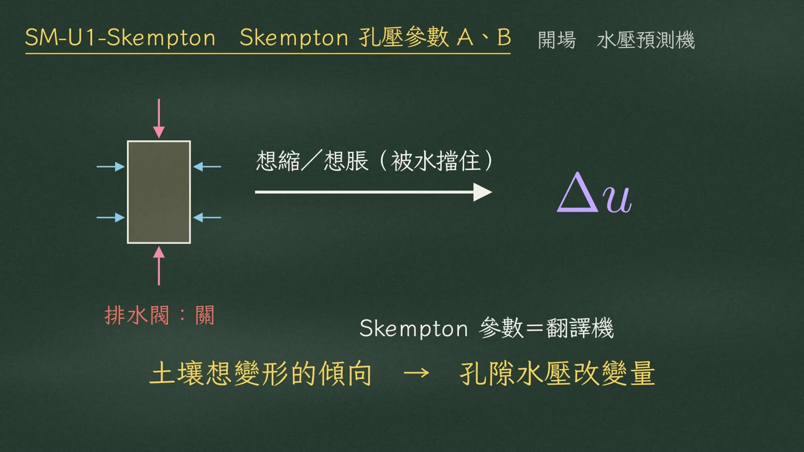
排水閥關 → 想縮／想脹被水擋住 → \(\Delta u\)；Skempton 參數＝翻譯機影片 0:23
公式是：
$$\color{#8a63c4}{\Delta u}=\color{#2c7fa8}{B}\Big[\color{#2c7fa8}{\Delta\sigma_3}+\color{#c2507a}{A}\,\underbrace{\color{#c2507a}{(\Delta\sigma_1-\Delta\sigma_3)}}_{\color{#c2507a}{\Delta\sigma_d}}\Big]$$
括號裡的差，就是軸差應力 \(\Delta\sigma_d\)。
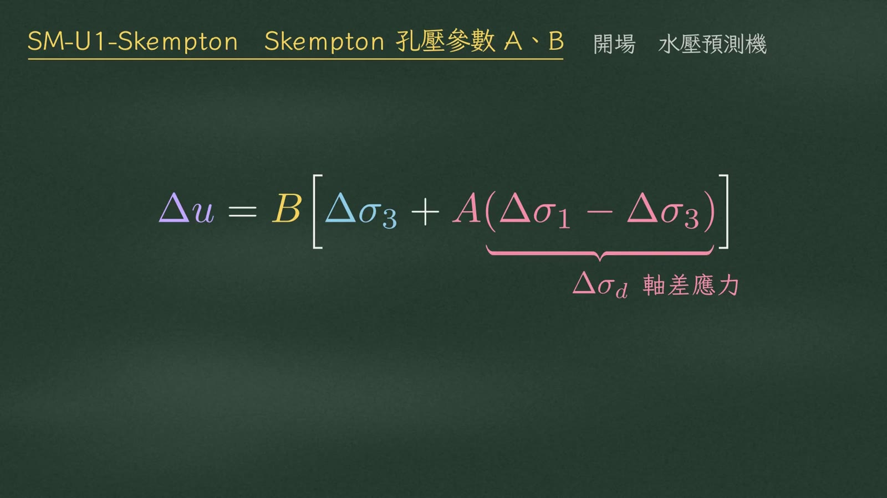
\(\Delta u=B[\Delta\sigma_3+A(\Delta\sigma_1-\Delta\sigma_3)]\)，\(\Delta\sigma_1-\Delta\sigma_3=\Delta\sigma_d\)影片 0:40
公式拆成兩段
這條公式可以拆成兩段加載：
| 加載段 | 怎麼加 | 增量 | 水壓由誰決定 |
|---|
| ① 等向加壓 | 四面八方一起加壓 | \(\Delta\sigma_3\) | B |
| ② 軸差剪切 | 只有活塞往下推 | \(\Delta\sigma_d\) | A（多出來的水壓） |
兩段疊加就是 \(\Delta u\)。
B 乘在整個括號外面因為水壓傳不傳得進去，前提都是飽和度。
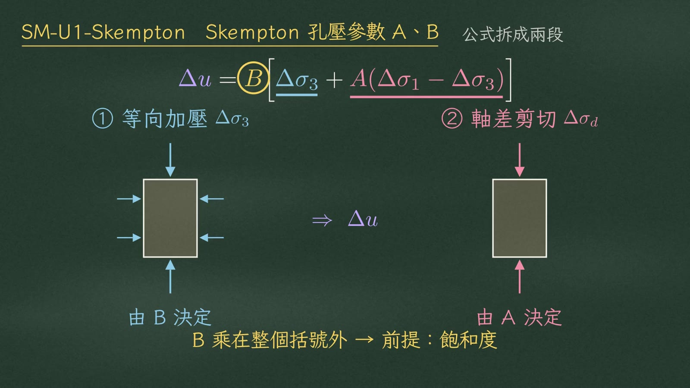
① 等向加壓由 B 決定、② 軸差剪切由 A 決定；B 圈起：乘在整個括號外 → 前提：飽和度影片 1:17
B 管飽和度
先看 B：圍壓增加一份，孔隙水分到多少。
$$\color{#2c7fa8}{B=\dfrac{\Delta u}{\Delta\sigma_3}}$$
完全飽和的土，孔隙全是水，水幾乎不可壓縮，圍壓百分之百由水吃掉：
$$B=1\ \Rightarrow\ \Delta u=\Delta\sigma_3$$
水吃掉全部，有效應力增量是零，顆粒一點都沒有多壓緊：
$$\Delta\sigma'=\Delta\sigma_3-\Delta u=0$$
土裡有氣泡的話，空氣先被壓縮、溶解，水壓升得少，B 就小於 1。
考題寫「飽和黏土」直接取 \(B=1\)。
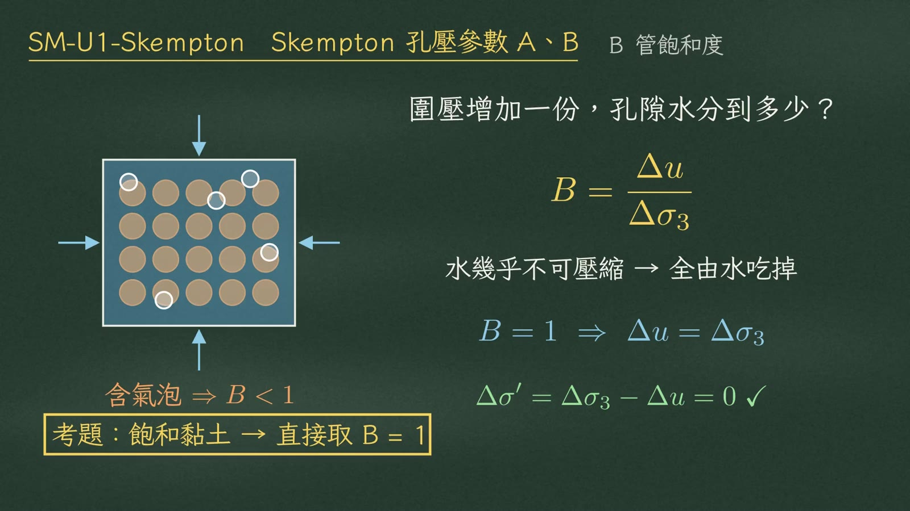
含氣泡 ⇒ \(B<1\)；\(B=1\Rightarrow\Delta u=\Delta\sigma_3\)、\(\Delta\sigma'=0\)；考題：飽和黏土 → 直接取 \(B=1\)影片 1:57
A 管剪縮與剪脹
再看 A：活塞往下推，顆粒互相錯動，孔壓怎麼變，看土想縮還是想脹。
CU 試驗裡 \(B=1\)、剪切時圍壓不變（\(\Delta\sigma_3=0\)），公式簡化成
$$\color{#c2507a}{A_f=\dfrac{u_f}{\Delta\sigma_d}}$$
\(u_f\) 是剪切段破壞時的超額孔壓。
| 土的類型 | 剪切時的傾向 | 孔壓 | \(A_f\) |
|---|
| 鬆砂／NC 黏土 | 顆粒滾進旁邊孔隙，想變小——剪縮；縮不了，水被擠壓 | 正孔壓 \(u_f>0\) | 約 0.5～1 |
| 密砂／重 OC 黏土 | 顆粒咬得很緊，只能爬過彼此，想變大——剪脹；水被往外拉 | 負孔壓 \(u_f<0\) | 可低到 −0.5 |
莫爾圓的結論正孔壓 → 圓往左移；負孔壓 → 圓往右移。
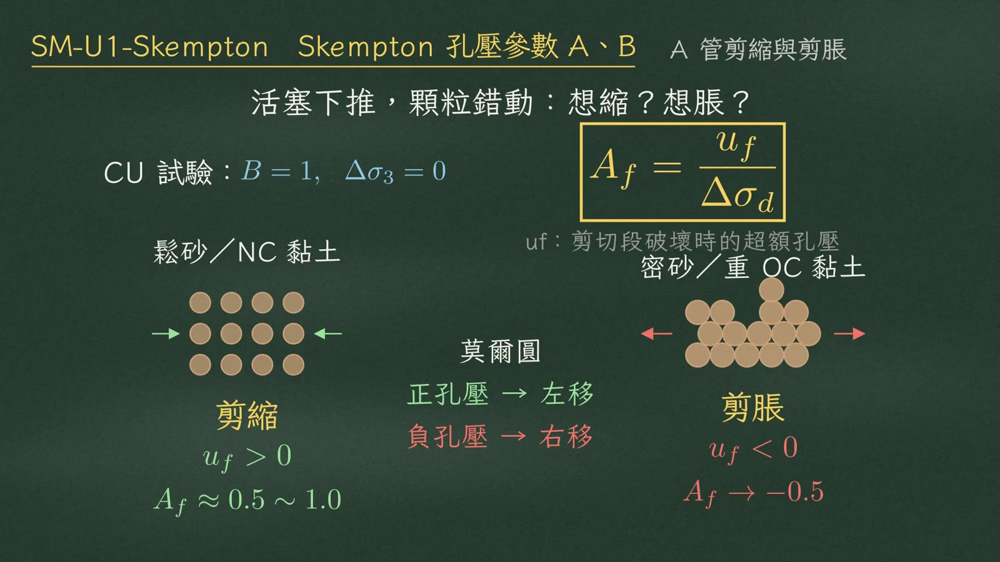
CU：\(B=1,\ \Delta\sigma_3=0\Rightarrow A_f=u_f/\Delta\sigma_d\)；剪縮 \(u_f>0\)、剪脹 \(u_f<0\)；正孔壓左移、負孔壓右移影片 3:01
用途一 跳到有效應力
第一個用途：從總應力跳到有效應力。外力和試驗量到的都是總應力，強度卻只認有效應力。算出 \(\Delta u\)，
$$\sigma'=\sigma-u$$
才能套用
$$\tau_f=c'+\sigma'\tan\phi'$$
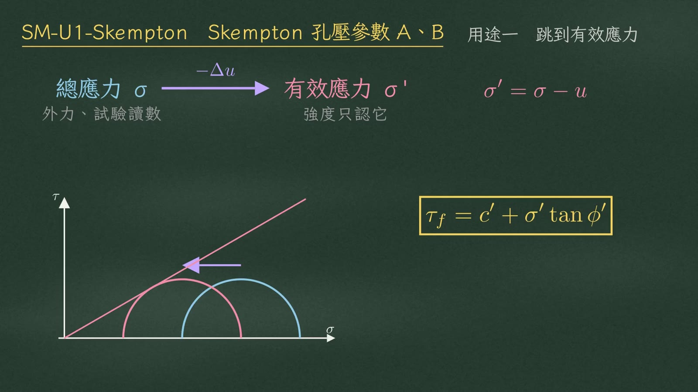
總應力 σ（外力、試驗讀數）\(\xrightarrow{-\Delta u}\) 有效應力 σ'（強度只認它）；圓左移觸及 \(\tau_f=c'+\sigma'\tan\phi'\)影片 3:24
用途二 快速加載（SM-2008-2）
第二個用途：預測快速加載會不會破壞。看 SM-2008-2，儲水槽水位快速上升。
| 已知 | 數值 |
|---|
| 黏土 A 點應力增量 | \(\Delta\sigma_v=\tfrac23\Delta q,\quad \Delta\sigma_h=\tfrac13\Delta q\) |
| 強度參數 | \(c'=0,\quad \phi'=30^\circ,\quad A_f=0.7\) |
| 初始有效應力 | \(\sigma'_{v0}=66.90\ \text{kPa}\)；\(K_0=0.5\Rightarrow\sigma'_{h0}=0.5(66.90)=33.45\ \text{kPa}\) |
| B | 水位上升很快，黏土來不及排水，飽和 → \(B=1\) |
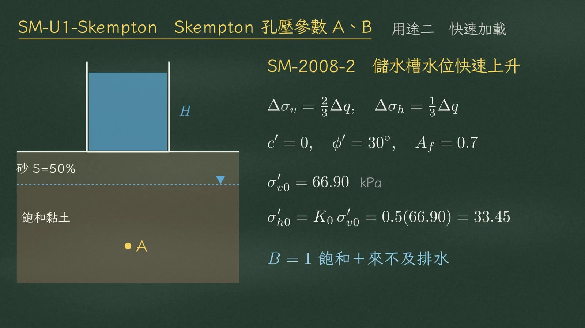
儲水槽剖面（砂 S=50%、飽和黏土、A 點）與已知條件；\(B=1\)：飽和＋來不及排水影片 4:01
代入 Skempton（\(\Delta\sigma_3=\Delta\sigma_h\)、\(\Delta\sigma_1=\Delta\sigma_v\)）：
$$\Delta u=\tfrac13\Delta q+0.7\left(\tfrac23-\tfrac13\right)\Delta q=\frac{1.7}{3}\Delta q\approx 0.567\,\Delta q$$
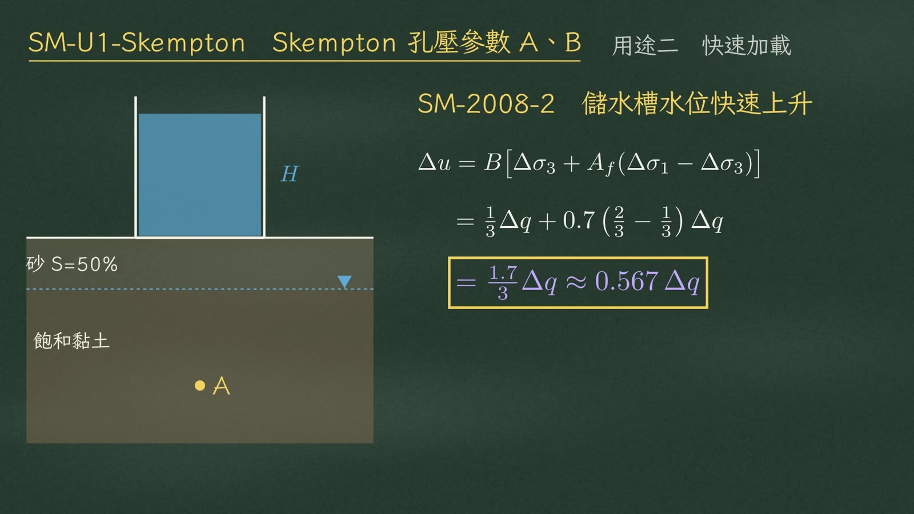
\(\Delta u=\tfrac{1.7}{3}\Delta q\approx0.567\,\Delta q\)影片 4:19
關鍵在水平方向：總應力只加 \(0.333\,\Delta q\)，水壓卻漲了 \(0.567\,\Delta q\)。
$$\color{#2c7fa8}{\Delta\sigma_h=0.333\,\Delta q}\ <\ \color{#8a63c4}{\Delta u=0.567\,\Delta q}$$
水壓漲得比總應力快，水平有效應力越加載越小；垂直向則略增：
$$\color{#c0392b}{\sigma'_{3f}=33.45-0.233\,\Delta q}\qquad \sigma'_{1f}=66.90+0.1\,\Delta q$$
莫爾圓被往左推，同時越撐越大。
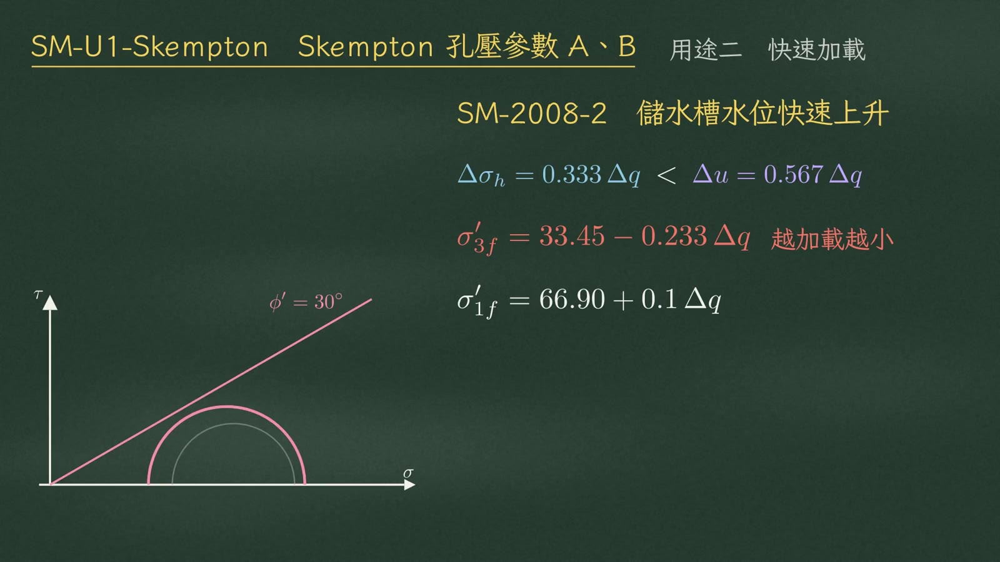
\(\Delta\sigma_h=0.333\Delta q<\Delta u=0.567\Delta q\)；\(\sigma'_{3f}\) 越加載越小；圓左移變大觸及 \(\phi'=30^\circ\) 線影片 4:44
\(\phi'=30^\circ\)，\(K_p=\tan^2 60^\circ=3\)，破壞時 \(\sigma'_{1f}=3\sigma'_{3f}\)：
$$66.90+0.1\,\Delta q=3\,(33.45-0.233\,\Delta q)$$
$$\Delta q=41.81\ \text{kPa}\qquad H=\frac{41.81}{9.81}\approx 4.26\ \text{m}$$
數值已複算\(0.8\,\Delta q=100.35-66.90=33.45\Rightarrow\Delta q=41.81\ \text{kPa}\)，\(H=4.26\ \text{m}\)，與影片及 HANDOFF.md 一致。
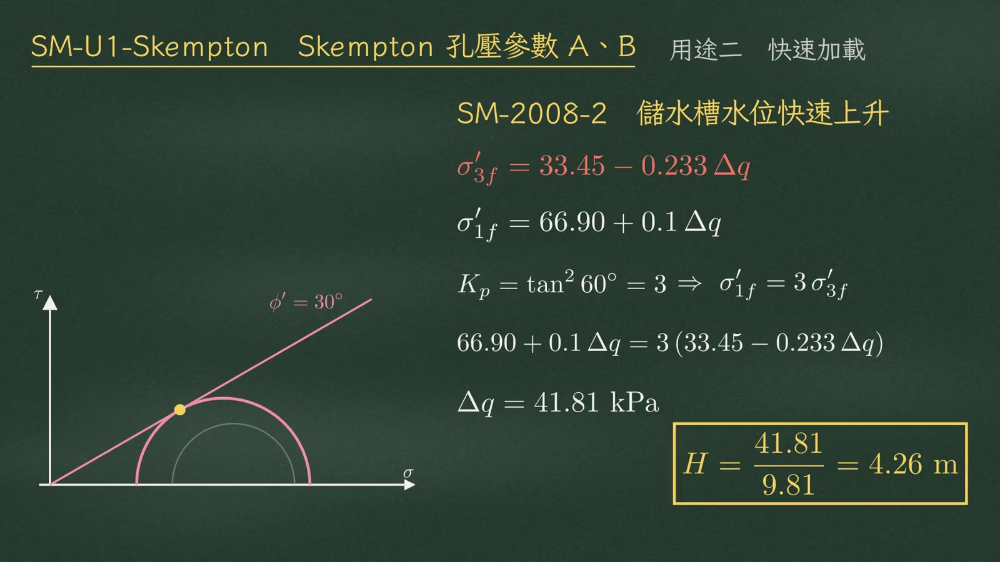
\(K_p=3\Rightarrow\sigma'_{1f}=3\sigma'_{3f}\)；\(\Delta q=41.81\ \text{kPa}\)，\(H=4.26\ \text{m}\)影片 5:11
用途三 交卷前自我檢查
第三個用途：交卷前自我檢查。算完 CU 題，用 \(u_f/\Delta\sigma_d\) 回推 \(A_f\)：
| 土的類型 | \(A_f\) 合理範圍 |
|---|
| 正常壓密（NC） | 0.5～1 附近 |
| 重過壓密（重 OC） | 負的或接近 0 |
| 高靈敏度黏土 | 可超過 1 |
0.5 到 1 是經驗範圍，高靈敏度黏土可以超過 1。
真正確定錯的是正常壓密算出負的 \(A_f\)，或 3.5 這種離譜值——幾乎一定是 \(u_f\) 正負號帶錯，或分母用錯。
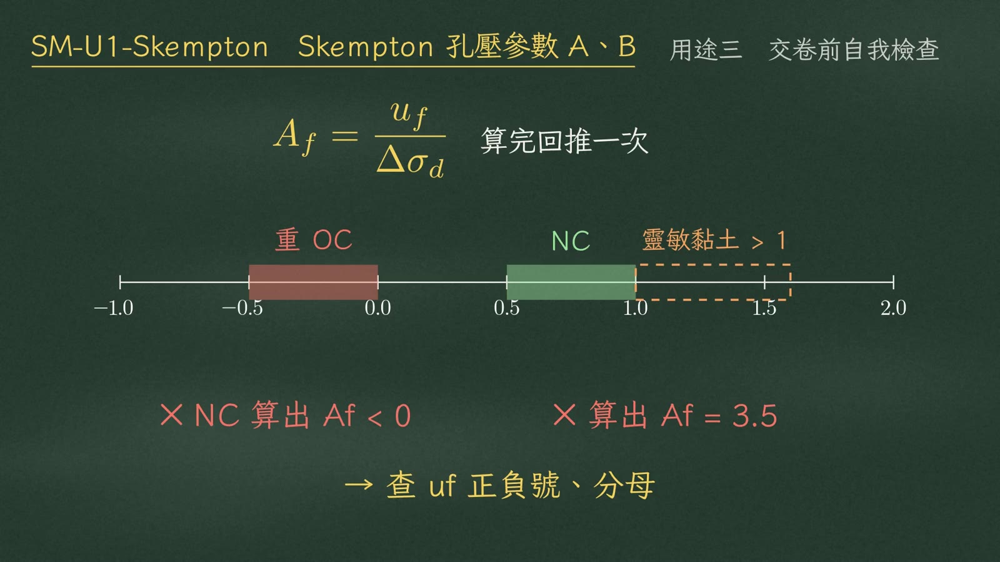
數線：重 OC −0.5～0、NC 0.5～1.0、靈敏黏土 >1；✕ NC 算出 \(A_f<0\)、✕ \(A_f=3.5\) → 查 \(u_f\) 正負號、分母影片 5:50
三個陷阱
陷阱一：簡化式有前提\(A_f=u_f/\Delta\sigma_d\) 只適用 CU、\(B=1\)、\(\Delta\sigma_3=0\)。水槽題水平應力也在增加，若只算 A 乘軸差應力：
$$\Delta u=A\,\Delta\sigma_d=0.233\,\Delta q\ \Rightarrow\ H=25.6\ \text{m}$$
✕ 錯。正解 \(H=4.26\ \text{m}\)，高估六倍。
反過來，\(0.567\) 除以軸差應力 \(0.333\) 得 1.7，也不是算錯，因為 \(\Delta\sigma_3\neq0\)，不可拿來當 \(A_f\) 檢查：
$$\frac{0.567}{0.333}=1.7\neq A_f\qquad(\Delta\sigma_3\neq0)$$
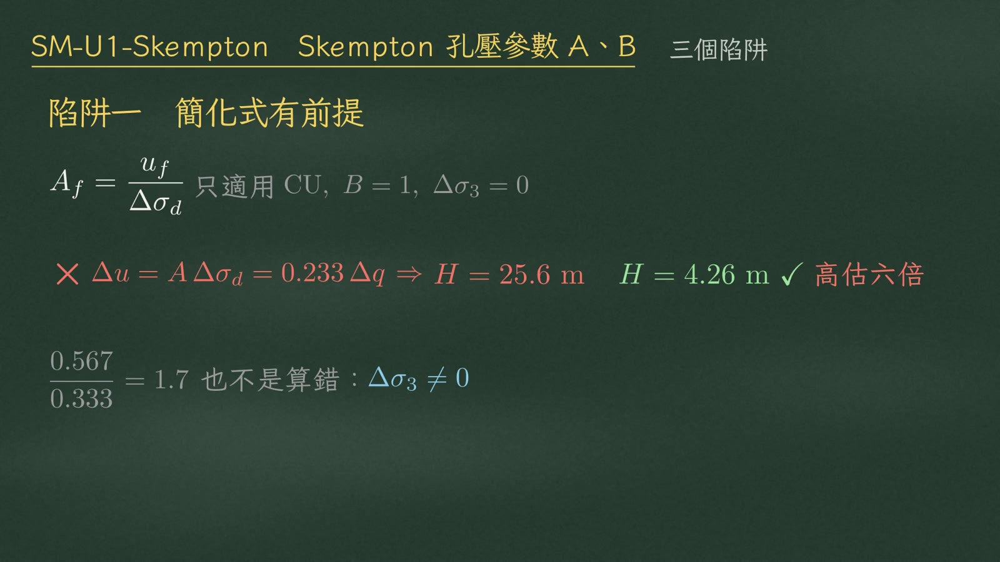
✕ \(\Delta u=A\Delta\sigma_d\Rightarrow H=25.6\ \text{m}\)；✓ \(H=4.26\ \text{m}\)，高估六倍；\(0.567/0.333=1.7\)：\(\Delta\sigma_3\neq0\)影片 6:19
陷阱二：B 乘在整個括號外不飽和土，剪切那項也要乘 B：
$$B\big[\Delta\sigma_3+A\,\Delta\sigma_d\big]$$
陷阱三：破壞時有效應力等於初始有效應力加總應力增量再扣 \(\Delta u\)；水平向別忘了 \(K_0\)：
$$\sigma'_f=\sigma'_0+\Delta\sigma-\Delta u,\qquad \sigma'_{h0}=K_0\,\sigma'_{v0}$$
✕ \(\Delta\sigma'_v=\Delta\sigma_v\)：總應力增量不能直接當有效應力增量。
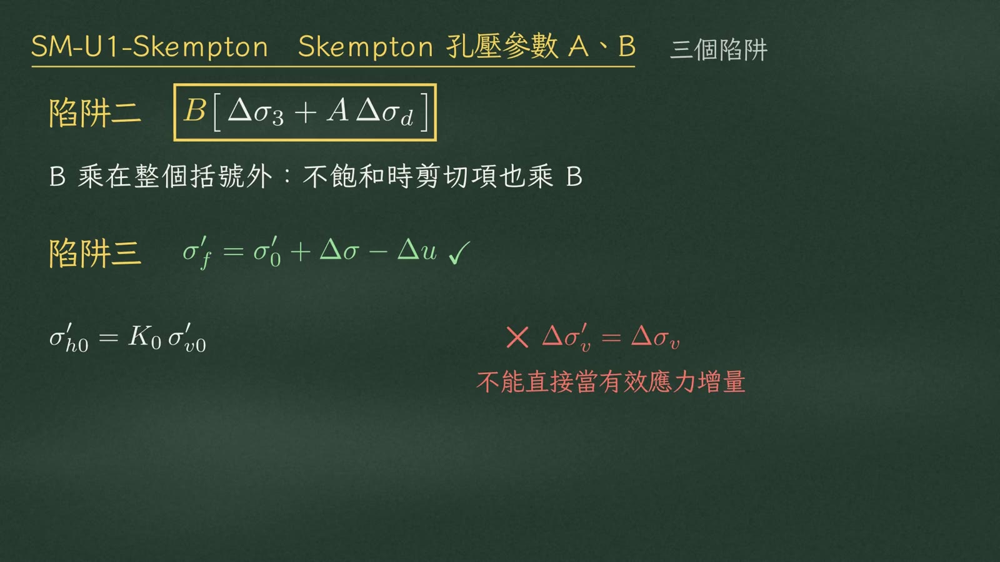
陷阱二 \(B[\Delta\sigma_3+A\Delta\sigma_d]\)；陷阱三 \(\sigma'_f=\sigma'_0+\Delta\sigma-\Delta u\)、\(\sigma'_{h0}=K_0\sigma'_{v0}\)影片 6:39
總結
整理
① \(\Delta u=B\big[\Delta\sigma_3+A\,\Delta\sigma_d\big]\)
② B 管飽和度：飽和土 \(B=1\)
③ A 管剪縮剪脹：NC 正、重 OC 負
④ 三大用途：跳到有效應力｜預測快速加載｜回推 \(A_f\) 檢查
Skempton，就是不排水危險期的水壓預測機。
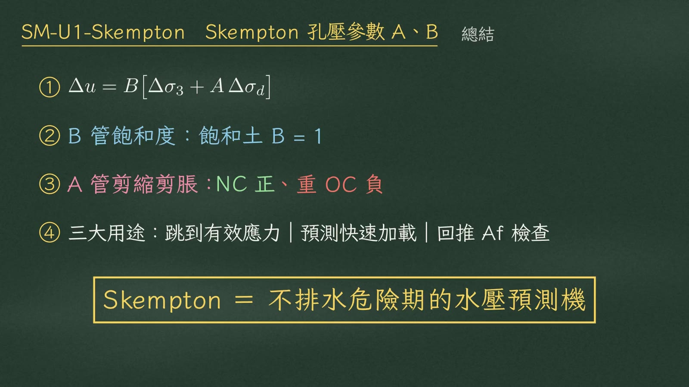
四點總結；Skempton ＝ 不排水危險期的水壓預測機影片 7:13